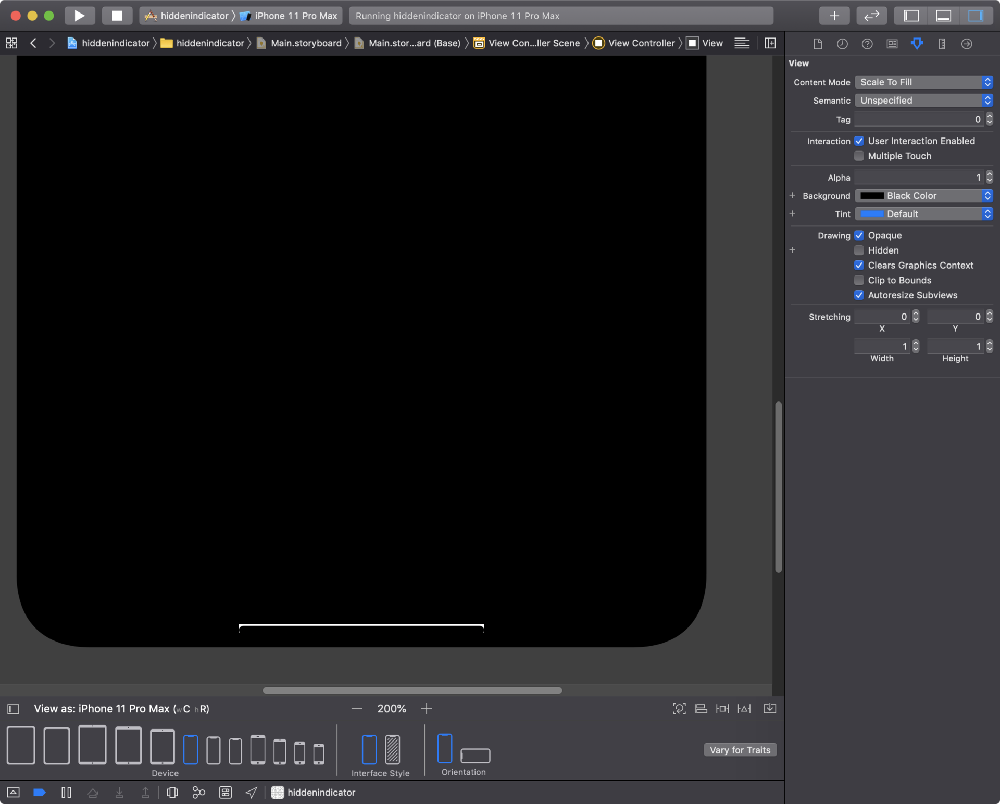
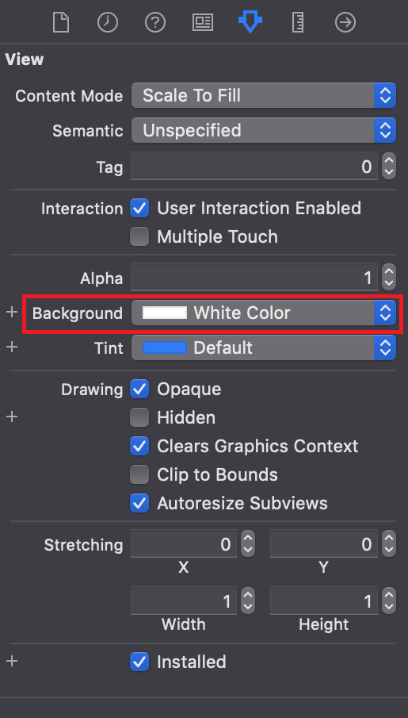
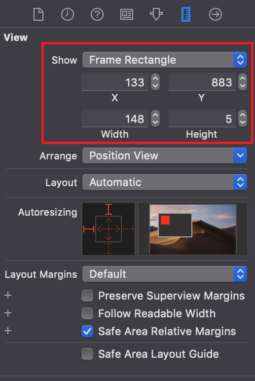
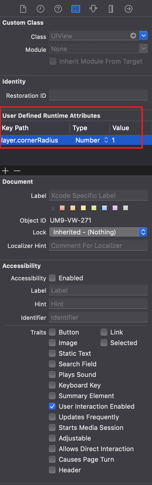
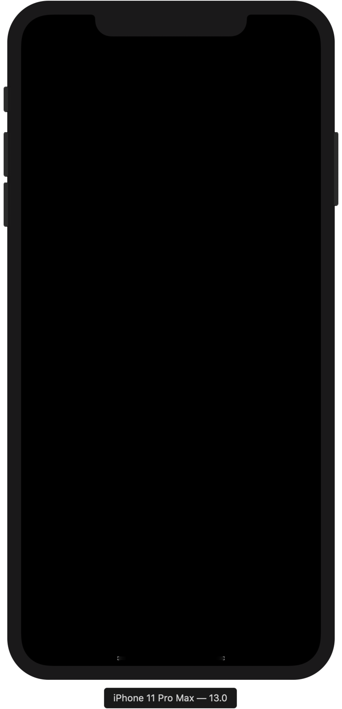
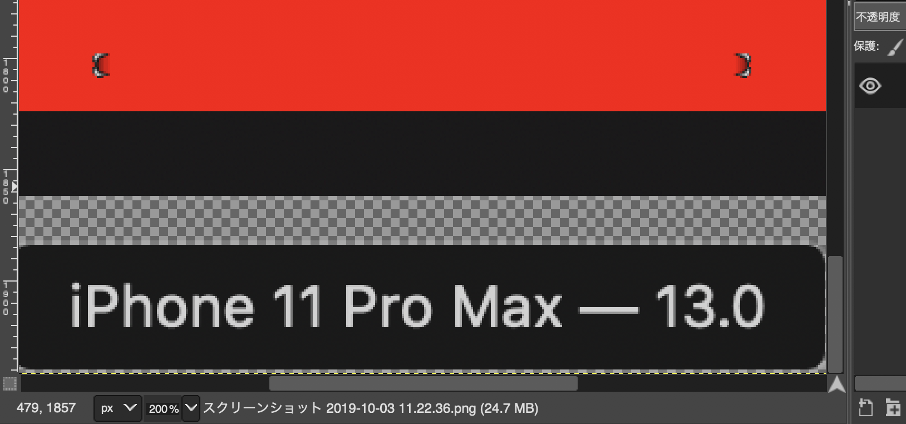
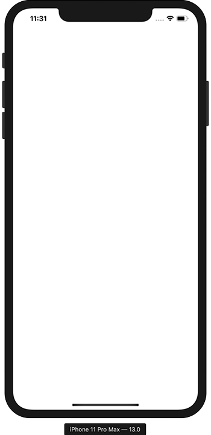

iPhone 11 Pro Max 向け iOS アプリでホームバーを常に非表示にする
iPhoneX 以降はホームボタンがなくなり、代わりに画面下部にホームバー Home Indicator と呼ばれるバーが表示されるようになった。
コレを普段非表示にするには、ViewController.swift に以下のようなコードを入れれば良い。
override func prefersHomeIndicatorAutoHidden() -> Bool {
return true
}
しかしこのコードでは、画面にタップしていない間だけしか非表示にならない。画面にタップするとホームバーが表示されてしまうのだ。
そこで、少々強引な技を使って、ホームバーを常に非表示にしてみる。
Storyboard の全体を黒背景にしたら、UIView を配置し、以下のように配置する。
- 背景色 : White
- X 座標 : 133
- Y 座標 : 833
- Width : 148
- Height : 5
- User Defined Runtime Attributes
- Key Path :
layer.cornerRadius - Type :
Number - Value :
1
- Key Path :
このように配置すると、Storyboard のプレビュー欄にあるホームバーに重なり、少し上にズレたような位置に、白いバーが配置されることになる。

改めて、UIView に設定した背景色はこのスクショのとおり。White を選ぶ。

座標・サイズはこのように。

- X : 133
- Y : 833
- Width : 148
- Height : 5
layer.cornerRadius という設定は、UIView を角丸にするためのモノ。適当に 1 とか少し丸めておく。

なお、上述の prefersHomeIndicatorAutoHidden() 関数は設定しないこと。
以上のように設定し、iPhone 11 Pro Max の Simulator を起動してみると、こんな感じに見える。

ホームバーは表示されているのだが、白い UIView の上にホームバーが配置されることで、ホームバーが反対色である黒色に変わり、黒背景と馴染んで一面真っ暗に見えるというワケだ。
この Simulator のスクリーンショットを撮り、GIMP で赤色に「塗りつぶし」してみる。よーくみると、角丸の度合いがピッタリ合っておらず、ホームバーの左右端から、下に置いた白い UIView がほんの少し見えている。この辺はもう少し調整が必要だろう。

ちなみに、白背景の Storyboard 上に、黒い UIView をバー状に配置したら、黒いホームバーは白くなるのか？というと、ホームバーはグレーになるだけで、ハッキリ見えてしまうので要注意。

ということで、「ホームバーがその下にある要素の色によって反対色を選ぼうとする」習性を利用し、背景色と同色のホームバーを作り出した。コレで、あたかもホームバーが表示されていないかのように見える、というワケだ。
この状態で App Store の審査が通るとは思えないので、開発者向けということで…。